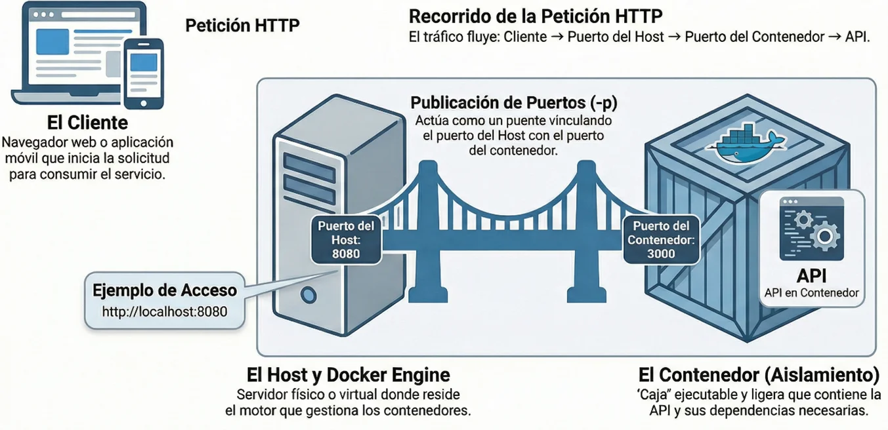
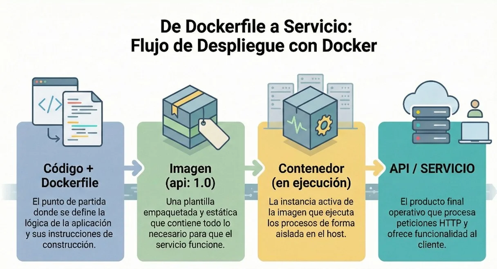
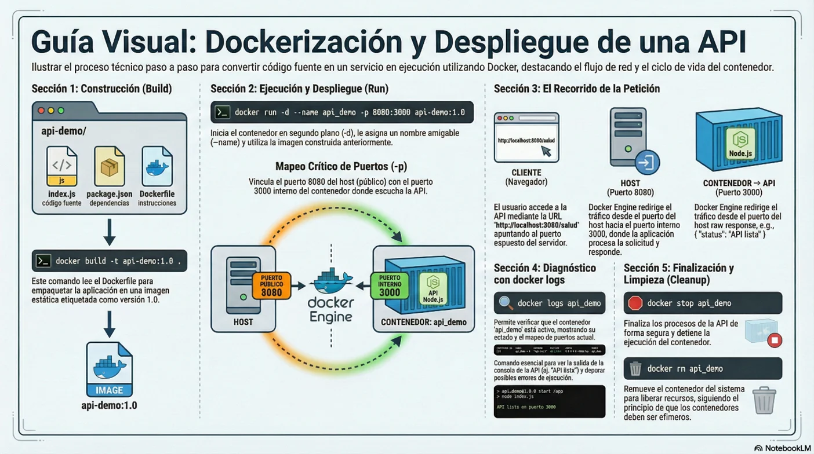
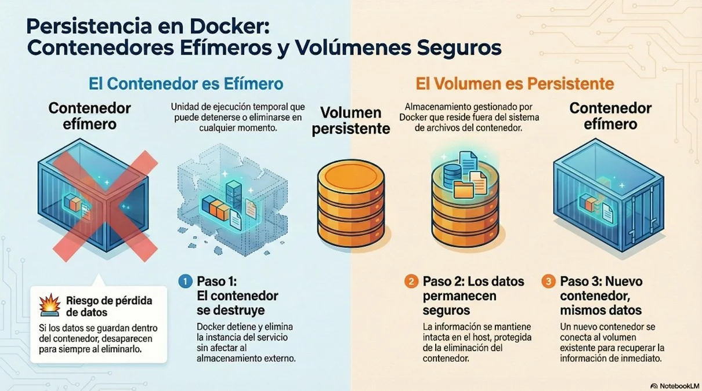

Contenedores (Docker)
En arquitectura de sistemas, un reto frecuente no es solo construir el software, sino lograr que los servicios (por ejemplo, una API) se ejecuten de forma consistente en distintos entornos: computador del desarrollador, laboratorio y servidor. Las diferencias de versiones, dependencias y configuraciones suelen generar fallas difíciles de reproducir.
Docker aporta una solución práctica: ejecutar servicios dentro de contenedores, empaquetando lo necesario para que arranquen de manera similar en diferentes máquinas. En esta guía verás, de forma teórica y con práctica elemental, cómo Docker se integra en una arquitectura basada en servicios, cómo se dockeriza una aplicación con Dockerfile y cómo se conservan datos con volúmenes.
Objetivos de Aprendizaje
- ✓ Explicar el rol de Docker dentro de una arquitectura de sistemas basada en servicios: cómo permite ejecutar una API/servidor dentro de un contenedor y desplegarlo de forma consistente.
- ✓ Definir con vocabulario claro los conceptos clave del ecosistema Docker: contenedor, imagen, registro, tag, Dockerfile, volumen y publicación de puertos
- ✓ Interpretar un diagrama de arquitectura donde se ubique Docker (cliente, host, Docker Engine, contenedor y servicio) y describir el recorrido de una petición HTTP.
- ✓ Realizar operaciones básicas del ciclo de vida de un contenedor: construir una imagen (docker build) a partir de un Dockerfile (nivel básico), ejecutar (docker run), listar (docker ps), ver logs (docker logs), detener (docker stop) y eliminar (docker rm)
Contenedores (Docker): rol en la arquitectura y despliegue básico de servicios.
El rol de Docker en la arquitectura de un sistema
En una arquitectura basada en servicios, Docker se usa como una capa de despliegue: permite empaquetar un servicio (por ejemplo, una API) y ejecutarlo dentro de un contenedor. Así, el servicio se comporta de forma más predecible al pasar de un entorno a otro (desarrollo, pruebas, servidor).
Lo importante aquí no es aprender “todos los comandos”, sino entender dónde encaja Docker en el sistema y por qué se usa para poner servicios a funcionar.

El cliente no se conecta “a Docker”, sino al servicio. Docker facilita que el servicio se ejecute aislado y que el puerto del contenedor se exponga al exterior mediante la publicación de puertos.
¿Qué es un contenedor?
Un contenedor es una forma de ejecutar un proceso (o varios procesos relacionados) con aislamiento. Puedes imaginarlo como un “paquete ejecutable” que trae el entorno mínimo que necesita el servicio: dependencias, librerías y configuración controlada. A diferencia de una máquina virtual, el contenedor no incluye un sistema operativo completo; aprovecha el del host, por eso suele ser más liviano y arranca más rápido.
| Criterio | Contenedor | Máquina Virtual |
|---|---|---|
| Qué se aísla | Procesos y entorno de la app | Sistema operativo completo |
| Impacto típico | Más liviano; arranque rápido | Más pesado; mayor consumo |
En este curso, la idea práctica es: si tu arquitectura tiene una API, Docker ayuda a ejecutarla de forma consistente como servicio.
Conceptos clave
Dockerfile: cómo se “dockeriza” una aplicación
El Dockerfile es un archivo de texto que describe, paso a paso, cómo construir una imagen. En arquitectura, esto es clave porque hace que el despliegue sea repetible: cualquier persona o servidor puede construir la misma imagen a partir del mismo Dockerfile.
Estructura típica:

Ejemplo real (API mínima en Node.js). Archivos de ejemplo:
Estructura:
api-demo/
index.js
package.json
Dockerfile
index.js (API mínima):
const express = require('express');
const app = express();
app.get('/salud', (req, res) => res.json({estado: 'ok'}));
app.listen(3000, () => console.log('API lista'));
package.json (dependencia mínima):
{
"name": "api-demo",
"version": "1.0.0",
"main": "index.js",
"dependencies": {"express": "^4.18.2"}
}
Dockerfile:
FROM node:18-alpine
WORKDIR /app
COPY package*.json ./
RUN npm install --omit=dev
COPY . .
EXPOSE 3000
CMD ["node", "index.js"]
Operaciones prácticas básicas
La práctica se enfoca en el ciclo de vida básico: crear/ejecutar, observar, detener y destruir. Con eso ya puedes entender el despliegue de un servicio en una arquitectura.
Comandos mínimos recomendados (sin estadísticas ni comandos avanzados):
| Comando | ¿Para qué sirve? | Ejemplo |
|---|---|---|
| docker build | Construir una imagen desde un Dockerfile | docker build -t api-demo:1.0 . |
| docker images | Ver imágenes locales | docker images |
| docker run | Crear y ejecutar un contenedor | docker run -d --name api -p 8080:3000 api-demo:1.0 |
| docker ps | Listar contenedores en ejecución | docker ps |
| docker logs | Ver salida del servicio (diagnóstico básico) | docker logs api |
| docker stop | Detener contenedor | docker stop api |
| docker rm | Eliminar contenedor (ya detenido) | docker rm api |
| docker volume create | Crear un volumen | docker volume create datos_demo |
| docker volume ls | Listar volúmenes | docker volume ls |
Banderas (flags) que sí se usan en esta guía: -d (segundo plano), --name (nombre), -p (publicar puertos), -v (volúmenes).
Ejemplo: dockerizar y desplegar una API
1) En la carpeta api-demo/ (donde está el Dockerfile), construir la imagen:
docker build -t api-demo:1.0 .
2) Ejecutar el contenedor publicando el puerto del host (8080) al del contenedor (3000):
docker run -d --name api_demo -p 8080:3000 api-demo:1.0
3) Probar el servicio:
Navegador: http://localhost:8080/salud
4) Verificar operación básica:
docker ps
docker logs api_demo
5) Cerrar práctica (detener y eliminar):
docker stop api_demo
docker rm api_demo

Volúmenes: persistencia de datos en Docker
En arquitectura, un principio común es que los contenedores sean reemplazables. Si el contenedor se elimina, el servicio puede reconstruirse, pero los datos no deberían perderse. Por eso, los datos se guardan fuera del contenedor, en volúmenes.

Ejemplo guiado (persistencia simple con archivo):
1) Crear un volumen:
docker volume create datos_demo
2) Escribir un archivo en el volumen con un contenedor temporal:
docker run --name writer -v datos_demo:/datos alpine:3.19 sh -c "echo Hola > /datos/saludo.txt"
docker rm writer
3) Leer el archivo desde otro contenedor:
docker run --rm -v datos_demo:/datos alpine:3.19 sh -c "cat /datos/saludo.txt"Actividad 1. Interpretación de arquitectura
Arrastra las tarjetas del banco hacia la zona punteada de cada concepto.
Banco de respuestas
💡 Pista: Relaciona cada concepto con su respectiva definición
✍️ Actividad 2. Entendiendo el funcionamiento de Docker
Describe en 6–8 líneas el recorrido de una petición HTTP desde el cliente hasta la API.
Evaluación
1. En una arquitectura basada en servicios, ¿cuál es el rol principal de Docker?
2. ¿Qué es un Dockerfile?
3. ¿Cuál afirmación describe mejor la diferencia entre imagen y contenedor?
4. ¿Cuál es el propósito principal de un volumen en Docker?
5. ¿Qué hace -p 8080:3000 en docker run?
Anexos
-
-
Video Explicativo de la temática:
Ir al recurso
Bibliografía
- Bernstein, D. (2014). Containers and Cloud: From LXC to Docker to Kubernetes. IEEE Cloud Computing, 1(3), 81–84. https://doi.org/10.1109/MCC.2014.51
- Docker Inc. (s. f.). Get started. Recuperado el 24 de febrero de 2026, de https://docs.docker.com/get-started/
- Docker Inc. (s. f.). Docker Compose: Getting started. Recuperado el 24 de febrero de 2026, de https://docs.docker.com/compose/gettingstarted/
- Kane, S., & Matthias, K. (2023). Docker: Up & Running (3rd ed.). O’Reilly Media.
- Merkel, D. (2014). Docker: Lightweight Linux Containers for Consistent Development and Deployment. Linux Journal, 2014(239). https://www.linuxjournal.com/content/docker-lightweight-linux-containers-consistent-development-and-deployment
- Nickoloff, J., & Kuenzli, S. (2019). Docker in Action (2nd ed.). Manning Publications. https://www.manning.com/books/docker-in-action-second-edition
- Open Container Initiative. (s. f.). OCI Runtime Specification (runtime-spec). Recuperado el 24 de febrero de 2026, de https://github.com/opencontainers/runtime-spec
- Red Hat. (2021, 8 de abril). What is containerization? https://www.redhat.com/en/topics/cloud-native-apps/what-is-containerization